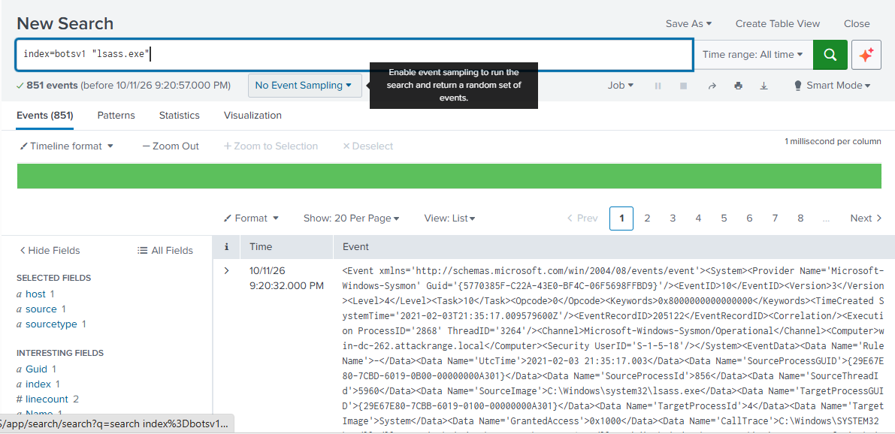
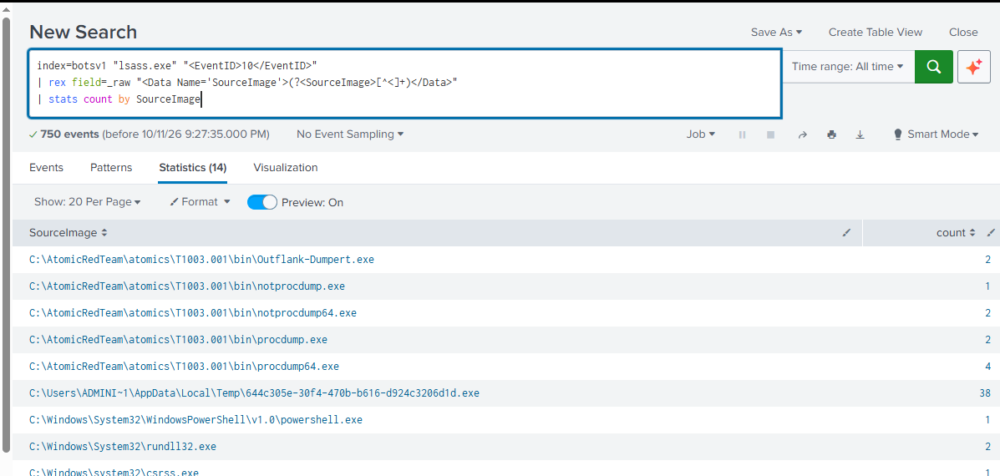

Lab 03: Threat Hunting LSASS Credential Dumping in Splunk¶
Verdict: True Positive | Critical | Escalate to IR
Two domain controllers had LSASS memory dumped with six different methods, including a renamed binary built to evade name-based detection. Domain credentials should be treated as compromised.
In plain English
What this is: After breaking into one computer, attackers try to steal passwords from its memory so they can spread to others. I searched through nearly 8,000 security log entries from two attacked servers to find out exactly how they did it.
Why it matters: These were domain controllers, the servers that control every login in a company. Stolen passwords there are effectively the keys to the whole building.
What I did: Narrowed 851 events down to 55 suspicious ones, separated normal Windows activity from six different attack methods, rebuilt the attack minute by minute, and wrote a detection rule that catches the behavior even when the attacker renames their tools.
Result: The rule flagged every tool that read the password store, and raised zero false alarms on the 108 normal events. That makes it a strong starting point for a production rule, pending tuning on a real environment's baseline.
Skills this lab shows: Splunk SPL Regex field extraction Sysmon Threat hunting Timeline reconstruction Detection engineering Sigma
Key terms in this lab
- LSASS: the Windows process that holds logged-in users' passwords in memory
- Credential dumping: copying those stored passwords out of memory
- Domain controller: the server that manages every account in a company
- False positive: an alarm on something harmless
Every term is explained in the Glossary.
1. Objective¶
lsass.exe holds credentials, Kerberos tickets, and NTLM hashes in memory. Dumping it is how attackers move from one compromised host to the whole domain.
The goal: ingest raw Sysmon telemetry into Splunk, separate attack activity from normal system noise, rebuild the attack timeline, and ship a detection that does not depend on tool names.
2. Data Source¶
| Field | Value |
|---|---|
| Telemetry | Sysmon Operational log, raw XML |
| Key events | 10 ProcessAccess, 1 ProcessCreate, 11 FileCreate |
| Hosts | win-dc-807.attackrange.local, win-dc-262.attackrange.local |
| Event time range | 2020-11-03 to 2021-02-03 (UTC) |
| Adversary simulation | Atomic Red Team T1003.001, run in Splunk Attack Range |
Index name
I loaded the log into a local Splunk index named botsv1. The data itself is Attack Range telemetry, not the BOTS v1 dataset.
3. Hunt Methodology¶
Step 1: Broad sweep¶
Every event mentioning LSASS, as source or target:

Result: 851 events. Too broad to triage, since LSASS also appears as the source of normal activity.
Step 2: Extract fields from raw XML¶
The log was ingested as raw XML with no field parsing, so I extracted SourceImage with rex and narrowed to Event ID 10:
index=botsv1 "lsass.exe" "<EventID>10</EventID>"
| rex field=_raw "<Data Name='SourceImage'>(?<SourceImage>[^<]+)</Data>"
| stats count by SourceImage

Result: 750 events from 14 source processes. Atomic Red Team binaries stand out immediately, but this view still mixes in normal Windows processes.
Step 3: Isolate who opened LSASS, and with what rights¶
Event ID 10 records the access mask (GrantedAccess). Reading LSASS memory requires PROCESS_VM_READ (0x0010), so masks like 0x1fffff (full access) and 0x1410 are what dumping looks like. Routine system access is usually 0x1400 or 0x1000.
index=botsv1 "<EventID>10</EventID>"
| rex field=_raw "<Data Name='SourceImage'>(?<SourceImage>[^<]+)</Data>"
| rex field=_raw "<Data Name='TargetImage'>(?<TargetImage>[^<]+)</Data>"
| rex field=_raw "<Data Name='GrantedAccess'>(?<GrantedAccess>[^<]+)</Data>"
| where match(TargetImage, "(?i)\\\\lsass\.exe$")
| stats count by SourceImage GrantedAccess
| sort - count
Result: 163 processes opened LSASS directly. 108 were normal Windows processes with low access masks. 55 were not.
| Stage | Events | What changed |
|---|---|---|
| Keyword sweep | 851 | Any event mentioning lsass.exe |
| Event ID 10 only | 750 | Process access events, LSASS as source or target |
| LSASS as target | 163 | Something opened LSASS |
| Benign baseline | 108 | svchost, wininit, csrss, services with low access masks |
| Alerts | 55 | Non-system processes with memory-read access |
Step 4: Pivot to process creation and file events¶
Event ID 10 shows who touched LSASS but not the command line. To confirm intent I pivoted to Event ID 1 (process creation) and Event ID 11 (file creation), looking for the command lines and the dump files they wrote.
index=botsv1 ("<EventID>1</EventID>" OR "<EventID>11</EventID>")
("lsass" OR "comsvcs" OR "mimikatz" OR ".dmp")
| rex field=_raw "<Data Name='CommandLine'>(?<CommandLine>[^<]+)</Data>"
| rex field=_raw "<Data Name='TargetFilename'>(?<TargetFilename>[^<]+)</Data>"
| table _raw CommandLine TargetFilename
4. Findings¶
Processes that read LSASS memory¶
| Source Process | Access | Count | Host | Assessment |
|---|---|---|---|---|
AppData\Local\Temp\644c305e-...d1d.exe |
0x1fffff |
38 | dc-807 | Malicious. Dropped by wce.exe (Windows Credentials Editor) and run as a SYSTEM service by services.exe |
procdump.exe / procdump64.exe |
0x1fffff |
6 | both | Malicious. procdump -ma lsass.exe wrote lsass_dump.dmp |
notprocdump.exe / notprocdump64.exe |
0x1fffff |
3 | dc-262 | Malicious. Renamed ProcDump to evade name-based rules |
Outflank-Dumpert.exe |
0x1fffff |
2 | dc-807 | Malicious. Direct syscall dumper, wrote dumpert.dmp |
rundll32.exe |
0x1fffff, 0x1410 |
2 | dc-807 | Malicious. comsvcs.dll MiniDump, a living-off-the-land dump |
taskmgr.exe |
0x1fffff, 0x1410 |
3 | dc-262 | Suspicious. Interactive admin session created lsass (2).DMP from Task Manager |
powershell.exe |
0x1410 |
1 | dc-807 | Needs context. Occurred 1 second after LSASS started at boot, before the attack chain |
Dump files written to disk (Event ID 11)¶
| Time (UTC) | Host | Writer | File |
|---|---|---|---|
| 2020-11-03 15:52:59 | dc-807 | procdump64.exe |
C:\Windows\Temp\lsass_dump.dmp |
| 2020-11-03 15:53:03 | dc-807 | rundll32.exe |
...\AppData\Local\Temp\lsass-comsvcs.dmp |
| 2020-11-03 15:53:03 | dc-807 | Outflank-Dumpert.exe |
C:\Windows\Temp\dumpert.dmp |
| 2021-02-03 16:51:01 | dc-262 | procdump64.exe |
C:\Windows\Temp\lsass_dump.dmp |
| 2021-02-03 16:51:14 | dc-262 | notprocdump64.exe |
C:\Windows\Temp\lsass_dump.dmp |
| 2021-02-03 21:34:57 | dc-262 | taskmgr.exe |
...\AppData\Local\Temp\2\lsass (2).DMP |
Attack timeline: win-dc-807, 2020-11-03 (UTC)¶
| Time | Activity |
|---|---|
| 15:52:48 | PowerShell checks that dumping tools exist on disk (Test-Path ...\procdump.exe, mimikatz.exe) |
| 15:52:58 | wce.exe drops a GUID-named binary to Temp, which runs as a SYSTEM service and opens LSASS 38 times |
| 15:52:59 | procdump -accepteula -ma lsass.exe writes a full memory dump |
| 15:53:03 | rundll32 comsvcs.dll MiniDump and Outflank-Dumpert.exe each write a dump |
| 15:53:03 | mimikatz.exe "sekurlsa::minidump %tmp%\lsass.DMP" "sekurlsa::logonpasswords full" parses a dump offline |
| 15:53:06 | Cleanup: del lsass_dump.dmp, del dumpert.dmp, Remove-Item lsass-comsvcs.dmp |
Key observation: Mimikatz never touched live LSASS. It parsed a dump file offline, so it does not appear in Event ID 10 at all. Only process creation logging (Event ID 1) caught it. A detection built only on Event ID 10 would miss this step.
Indicators¶
| Type | Value |
|---|---|
| SHA256 | 7234C8F98B87593641BBDB594E34C94B9436986C4FB70E7DA5BCECFF147D14C3 (Temp service binary) |
| MD5 | 605560CA0624AABF9F53675257B9BE21 |
| File path | C:\Users\ADMINI~1\AppData\Local\Temp\644c305e-30f4-470b-b616-d924c3206d1d.exe |
| Tool directory | C:\AtomicRedTeam\atomics\T1003.001\bin\ |
| Dump files | lsass_dump.dmp, lsass-comsvcs.dmp, dumpert.dmp, lsass (2).DMP |
| Account | ATTACKRANGE\Administrator |
5. Detection Rule¶
Built to catch the behavior, not the tool name: any non-system process opening LSASS with memory-read rights.
index=botsv1 "<EventID>10</EventID>"
| rex field=_raw "<Data Name='SourceImage'>(?<SourceImage>[^<]+)</Data>"
| rex field=_raw "<Data Name='TargetImage'>(?<TargetImage>[^<]+)</Data>"
| rex field=_raw "<Data Name='GrantedAccess'>(?<GrantedAccess>[^<]+)</Data>"
| rex field=_raw "<Computer>(?<host_name>[^<]+)</Computer>"
| where match(TargetImage, "(?i)\\\\lsass\.exe$")
| where match(GrantedAccess, "(?i)^0x(1fffff|1010|1410|1438|143a|1f3fff)$")
| where NOT match(SourceImage, "(?i)^C:\\\\Windows\\\\System32\\\\(svchost|wininit|csrss|services|lsm)\.exe$")
| eval severity=if(match(SourceImage, "(?i)\\\\(AppData|Temp|Users\\\\Public)\\\\"), "critical", "high")
| stats count min(_time) as first_seen max(_time) as last_seen values(GrantedAccess) as access by host_name SourceImage severity
| sort - count
Validation against the lab data¶
| Metric | Result |
|---|---|
| LSASS access events evaluated | 163 |
| Alerts fired | 55 |
| Alerts tied to confirmed dumping | 54 |
| Alerts needing analyst context | 1 (PowerShell at boot) |
| Benign system accesses alerted | 0 of 108 |
Renamed notprocdump.exe caught |
Yes, matched on behavior, not name |
A Sigma version is in the detection library for porting to other SIEMs.
6. Takeaways¶
- Detect the access mask, not the filename.
notprocdump.exewould slip past a rule looking for "procdump". It cannot hide its0x1fffffrequest to LSASS. - Event ID 10 alone is not enough. Offline parsing with Mimikatz only shows up in process creation logs. Pair access monitoring with command line monitoring for
sekurlsa,MiniDump, and-ma lsass. - Watch for dump files. An Event ID 11 rule for
*.dmpfiles containing "lsass" is a cheap second layer that caught every dump here, including the Task Manager one. - Check your timestamps. Splunk set
_timeto my ingest time because the raw XML was not timestamp-parsed. The real event times came from theSystemTimefield. In production, configureTIME_PREFIXinprops.confso timelines are correct.
7. Response Actions¶
- Isolate
win-dc-807andwin-dc-262from the network. - Reset passwords for every account with an active session on both hosts, starting with
ATTACKRANGE\Administrator. - Reset the
krbtgtaccount twice to invalidate forged Kerberos tickets. - Hunt for the SHA256 above and for
*.dmpfiles across all endpoints. - Enable LSA Protection (
RunAsPPL) and Credential Guard on domain controllers.